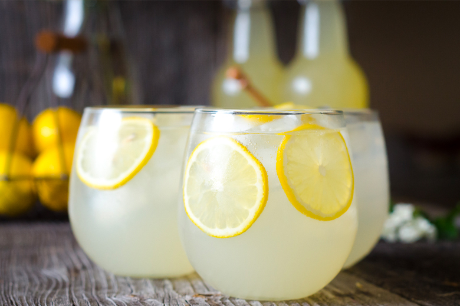

The Best Lemonade Ever

When life gives you lemons, make the Best Lemonade Ever! Sweet, tart, easy to throw together, and oh-so refreshing.
Description
It couldn't be easier to make this homemade lemonade with just a few simple ingredients you probably already have on hand.
Ingredients
- 1¾ cups white sugar
- 1 cup water
- 9 medium lemons, or more as needed
- 7 cups ice-cold water
- ice as needed
Method
- Combine sugar and 1 cup water in a small saucepan. Stir to dissolve sugar while mixture comes to a boil. Set aside to cool slightly.
- Meanwhile, roll lemons around on your counter to soften. Cut in half lengthwise, and squeeze into a liquid measuring cup.
- Pour 7 cups ice-cold water into a pitcher. Stir in lemon juice and pulp, then add simple syrup to taste.
- Add pulp to the juice, but discard any seeds. Continue juicing until you have 1 1/2 cups fresh juice and pulp.
- Add ice. Combine sugar and 1 cup water in a small saucepan. Stir to dissolve sugar while mixture comes to a boil. Set aside to cool slightly.
Back to the Recipes